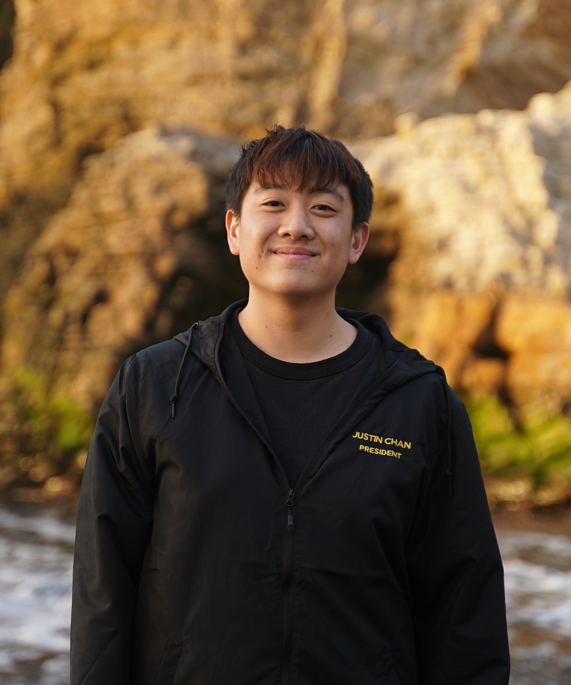

Hi, I'm Justin!

My name is Justin Chan and I am a 3rd year at Cal Poly SLO studying Computer Science.
I am president of the Chinese Students' Association, so if you have any questions regarding CSA, please
feel free to contact me!
In my free time I enjoy cooking and going to the gym. I have to say my comfort food I can make at anytime is fried rice! My favorite place in the world
is Costco Wholesale, and my favorite color is green.